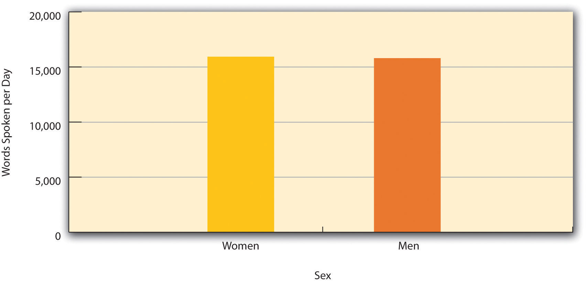
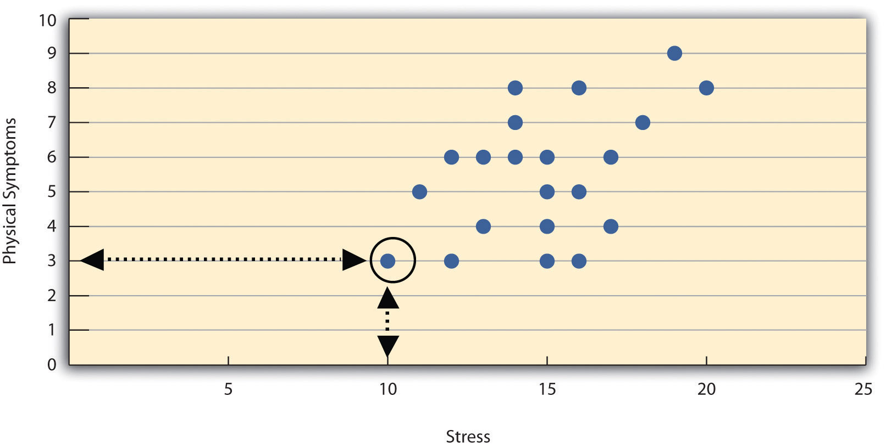
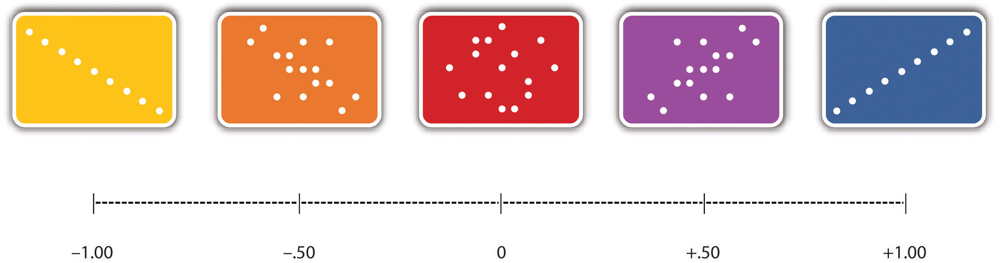
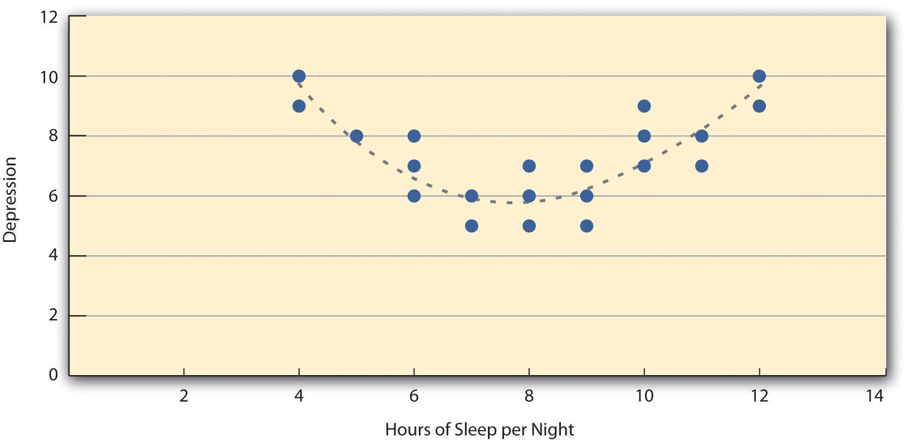

Before we address where research questions in psychology come from—and what makes them more or less interesting—it is important to understand the kinds of questions that researchers in psychology typically ask. This requires a quick introduction to several basic concepts, many of which we will return to in more detail later in the book.
Research questions in psychology are about variables. A variableA quantity or quality that varies across individuals. is a quantity or quality that varies across people or situations. For example, the height of the students in a psychology class is a variable because it varies from student to student. The sex of the students is also a variable as long as there are both male and female students in the class. A quantitative variableA quantity that varies across individuals and is measured by assigning a number to each individual. is a quantity, such as height, that is typically measured by assigning a number to each individual. Other examples of quantitative variables include people’s level of talkativeness, how depressed they are, and the number of siblings they have. A categorical variableA quality that varies across individuals and is measured by assigning a category label to each individual. is a quality, such as sex, and is typically measured by assigning a category label to each individual. Other examples include people’s nationality, their occupation, and whether they are receiving psychotherapy.
Researchers in psychology are usually interested in drawing conclusions about some very large group of people. This is called the populationThe entire group of individuals that the researcher wants to draw conclusions about.. It could be American teenagers, children with autism, professional athletes, or even just human beings—depending on the interests and goals of the researcher. But they usually study only a small subset or sampleThe subset of individuals that the researcher actually studies. of the population. For example, a researcher might measure the talkativeness of a few hundred college students with the intention of drawing conclusions about the talkativeness of men and women in general. It is important, therefore, for researchers to use a representative sample—one that is similar to the population in important respects.
One method of obtaining a sample is simple random sampling, in which every member of the population has an equal chance of being selected for the sample. For example, a pollster could start with a list of all the registered voters in a city (the population), randomly select 100 of them from the list (the sample), and ask those 100 whom they intended to vote for. Unfortunately, random sampling is difficult or impossible in most psychological research because the populations are less clearly defined than the registered voters in a city. How could a researcher give all American teenagers or all children with autism an equal chance of being selected for a sample? The most common alternative to random sampling is convenience sampling, in which the sample consists of individuals who happen to be nearby and willing to participate (such as introductory psychology students). The obvious problem with convenience sampling is that the sample might not be representative of the population.
Once the sample is selected, researchers need to measure the variables they are interested in. This requires an operational definitionA definition of a variable or construct in terms of precisely how it will be measured.—a definition of the variable in terms of precisely how it is to be measured. Most variables can be operationally defined in many different ways. For example, depression can be operationally defined as people’s scores on a paper-and-pencil depression scale, the number of depressive symptoms they are experiencing, or whether they have been diagnosed with major depressive disorder. When a variable has been measured for a particular individual, the result is called a score, and a set of scores is called data. Note that data is plural—the singular datum is rarely used—so it is grammatically correct to say, “Those are interesting data” (and incorrect to say, “That is interesting data”).
Some research questions in psychology are about one variable. How accurate are children’s memories for being touched? How talkative are American college students? How common is it for people to be diagnosed with major depressive disorder? Answering such questions requires operationally defining the variable, measuring it for a sample, analyzing the results, and drawing conclusions about the population. For a quantitative variable, this would typically involve computing the mean and standard deviation of the scores. For a categorical variable, it would typically involve computing the percentage of scores at each level of the variable.
However, research questions in psychology are more likely to be about statistical relationships between variables. There is a statistical relationshipA difference in the average score on one variable across levels of another variable. between two variables when the average score on one differs systematically across the levels of the other. Studying statistical relationships is important because instead of telling us about behaviors and psychological characteristics in isolation, it tells us about the causes, consequences, development, and organization of those behaviors and characteristics.
There are two basic forms of statistical relationship: differences between groups and correlations between quantitative variables. Although both are consistent with the general definition of a statistical relationship—the average score on one variable differs across levels of the other—they are usually described and analyzed somewhat differently. For this reason it is important to distinguish them clearly.
One basic form of statistical relationship is a difference between the mean scores of two groups on some variable of interest. A wide variety of research questions in psychology take this form. Are women more talkative than men? Do children using human figure drawings recall more touch information than children not using human figure drawings? Do people talking on a cell phone have poorer driving abilities than people not talking on a cell phone? Do people receiving Psychotherapy A tend to have fewer depressive symptoms than people receiving Psychotherapy B? Later we will also see that such relationships can involve more than two groups and that the groups can consist of the very same individuals tested at different times or under different conditions. For now, however, it is easiest to think in terms of two distinct groups.
Differences between groups are usually described by giving the mean score and standard deviation for each group. This information can also be presented in a bar graphA graph used to show differences between the mean scores of two or more groups. like that in Figure 2.2 "Bar Graph Showing the Very Small Difference in the Mean Number of Words Spoken per Day by Women and Men in a Large Sample", where the heights of the bars represent the group means.
Figure 2.2 Bar Graph Showing the Very Small Difference in the Mean Number of Words Spoken per Day by Women and Men in a Large Sample
Based on data from “Are Women Really More Talkative Than Men?” by M. R. Mehl, S. Vazire, N. Ramirez-Esparza, R. B. Slatcher, and J. W. Pennebaker, 2007, Science, 317, p. 82.
A second basic form of statistical relationship is a correlation between two quantitative variables, where the average score on one variable differs systematically across the levels of the other. Again, a wide variety of research questions in psychology take this form. Is being a happier person associated with being more talkative? Do children’s memories for touch information improve as they get older? Does the effectiveness of psychotherapy depend on how much the patient likes the therapist?
Correlations between quantitative variables are often presented using scatterplotsA graph used to show the correlation between two quantitative variables.. Figure 2.3 "Scatterplot Showing a Hypothetical Positive Relationship Between Stress and Number of Physical Symptoms" shows some hypothetical data on the relationship between the amount of stress people are under and the number of physical symptoms they have. Each point in the scatterplot represents one person’s score on both variables. For example, the circled point in Figure 2.3 "Scatterplot Showing a Hypothetical Positive Relationship Between Stress and Number of Physical Symptoms" represents a person whose stress score was 10 and who had three physical symptoms. Taking all the points into account, one can see that people under more stress tend to have more physical symptoms. This is a good example of a positive relationshipA statistical relationship between two variables in which higher scores on one tend to be associated with higher scores on the other., in which higher scores on one variable tend to be associated with higher scores on the other. A negative relationshipA statistical relationship between two variables in which higher scores on one tend to be associated with lower scores on the other. is one in which higher scores on one variable tend to be associated with lower scores on the other. There is a negative relationship between stress and immune system functioning, for example, because higher stress is associated with lower immune system functioning.
Figure 2.3 Scatterplot Showing a Hypothetical Positive Relationship Between Stress and Number of Physical Symptoms
The circled point represents a person whose stress score was 10 and who had three physical symptoms. Pearson’s r for these data is +.51.
The strength of a correlation between quantitative variables is typically measured using a statistic called Pearson’s rA measure of the strength of the correlation between two quantitative variables.. As Figure 2.4 "Range of Pearson’s " shows, Pearson’s r ranges from −1.00 (the strongest possible negative relationship) to +1.00 (the strongest possible positive relationship). A value of 0 means there is no relationship between the two variables. When Pearson’s r is 0, the points on a scatterplot form a shapeless “cloud.” As its value moves toward −1.00 or +1.00, the points come closer and closer to falling on a single straight line.
Figure 2.4 Range of Pearson’s r, From −1.00 (Strongest Possible Negative Relationship), Through 0 (No Relationship), to +1.00 (Strongest Possible Positive Relationship)
Pearson’s r is a good measure only for linear relationships, in which the points are best approximated by a straight line. It is not a good measure for nonlinear relationships, in which the points are better approximated by a curved line. Figure 2.5 "Hypothetical Nonlinear Relationship Between Sleep and Depression", for example, shows a hypothetical relationship between the amount of sleep people get per night and their level of depression. In this example, the line that best approximates the points is a curve—a kind of upside-down “U”—because people who get about eight hours of sleep tend to be the least depressed. Those who get too little sleep and those who get too much sleep tend to be more depressed. Nonlinear relationships are fairly common in psychology, but measuring their strength is beyond the scope of this book.
Figure 2.5 Hypothetical Nonlinear Relationship Between Sleep and Depression
Researchers are often interested in a statistical relationship between two variables because they think that one of the variables causes the other. That is, the statistical relationship reflects a causal relationship. In these situations, the variable that is thought to be the cause is called the independent variableA variable that is thought to be the cause of another variable (called the dependent variable). In an experiment, the independent variable is manipulated by the researcher. (often referred to as X for short), and the variable that is thought to be the effect is called the dependent variableA variable that is thought to be the effect of another variable (called the independent variable). (often referred to as Y). For example, the statistical relationship between whether or not a depressed person receives psychotherapy and the number of depressive symptoms he or she has reflects the fact that the psychotherapy (the independent variable) causes the reduction in symptoms (the dependent variable). Understanding causal relationships is important in part because it allows us to change people’s behavior in predictable ways. If we know that psychotherapy causes a reduction in depressive symptoms—and we want people to have fewer depressive symptoms—then we can use psychotherapy to achieve this goal.
But not all statistical relationships reflect causal relationships. This is what psychologists mean when they say, “Correlation does not imply causation.” An obvious example comes from a study in Taiwan showing a positive relationship between the number of electrical appliances that people use and the extent to which they use birth control (Stanovich, 2010).Stanovich, K. E. (2010). How to think straight about psychology (9th ed.). Boston, MA: Allyn & Bacon. It seems clear, however, that this does not mean that owning electrical appliances causes people to use birth control, and it would not make sense to try to increase the use of birth control by giving people toasters and hair dryers.
There are two reasons that correlation does not imply causation. The first is called the directionality problemThe problem of knowing whether two variables, X and Y, are statistically related because X causes Y or because Y causes X.. Two variables, X and Y, can be statistically related because X causes Y or because Y causes X. Consider, for example, a study showing that whether or not people exercise is statistically related to how happy they are—such that people who exercise are happier on average than people who do not. This statistical relationship is consistent with the idea that exercising causes happiness, but it is also consistent with the idea that happiness causes exercise. Perhaps being happy gives people more energy or leads them to seek opportunities to socialize with others by going to the gym. The second reason that correlation does not imply causation is called the third-variable problemThe problem of knowing whether two variables, X and Y, are statistically related because one causes the other or because some third variable, Z, causes both X and Y.. Two variables, X and Y, can be statistically related not because X causes Y, or because Y causes X, but because some third variable, Z, causes both X and Y. For example, the fact that people with more electrical appliances are more likely to use birth control probably reflects the fact that having more education or income causes people to own more appliances and causes them to use birth control. Similarly, the statistical relationship between exercise and happiness could mean that some third variable, such as physical health, causes both of the others. Being physically healthy could cause people to exercise and cause them to be happier.
Although researchers in psychology know that correlation does not imply causation, many journalists do not. One website about correlation and causation, http://jonathan.mueller.faculty.noctrl.edu/100/correlation_or_causation.htm, links to dozens of media reports about real biomedical and psychological research. Many of the headlines suggest that a causal relationship has been demonstrated, when a careful reading of the articles shows that it has not because of the directionality and third-variable problems.
One article is about a study showing that children who ate candy every day were more likely than other children to be arrested for a violent offense later in life. But could candy really “lead to” violence, as the headline suggests? What alternative explanations can you think of for this statistical relationship? How could the headline be rewritten so that it is not misleading?
As we will see later in the book, there are various ways that researchers address the directionality and third-variable problems. The most effective, however, is to conduct an experiment. An experimentA type of empirical study in which an independent variable is manipulated and a dependent variable is measured while extraneous variables are controlled. is a study in which the researcher manipulates the independent variable. For example, instead of simply measuring how much people exercise, a researcher could bring people into a laboratory and randomly assign half of them to run on a treadmill for 15 minutes and the rest to sit on a couch for 15 minutes. Although this seems like a minor addition to the research design, it is extremely important. Now if the exercisers end up in more positive moods than those who did not exercise, it cannot be because their moods affected how much they exercised (because it was the researcher who determined how much they exercised). Likewise, it cannot be because some third variable (e.g., physical health) affected both how much they exercised and what mood they were in (because, again, it was the researcher who determined how much they exercised). Thus experiments eliminate the directionality and third-variable problems and allow researchers to draw firm conclusions about causal relationships. We will have much more to say about experimental and nonexperimental research later in the book.
Practice: For each of the following statistical relationships, decide whether the directionality problem is present and think of at least one plausible third variable: